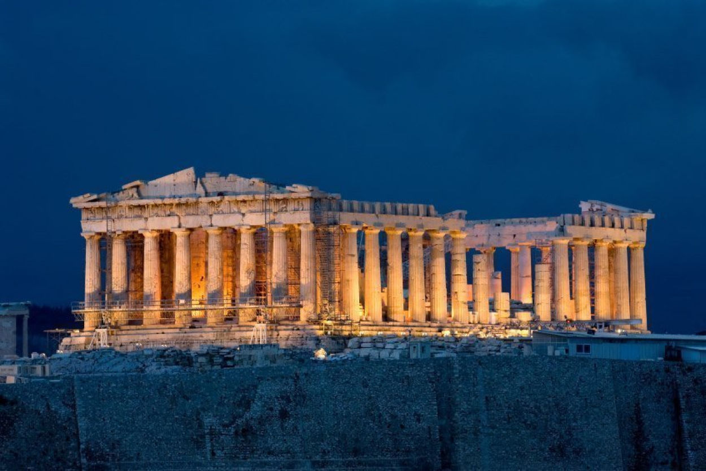
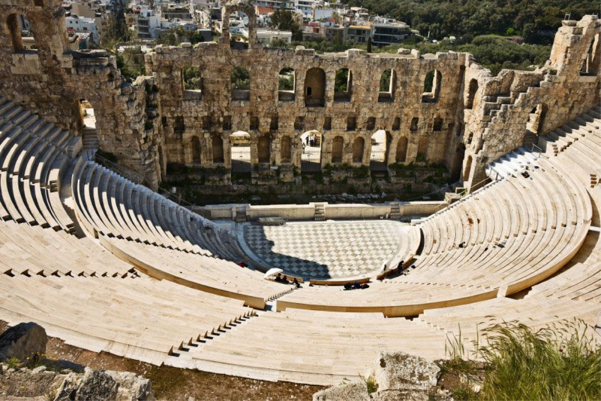
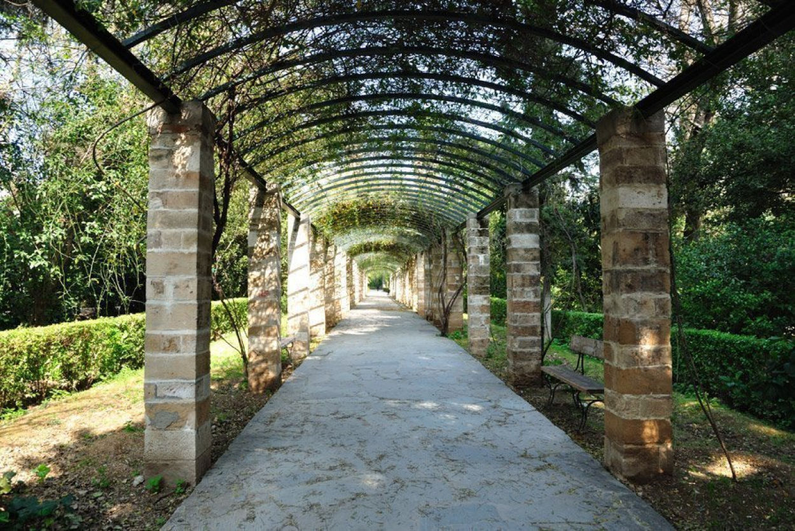

LA GRECE
La principale raison pour laquelle j'aimerais visiter la Grèce,c'est cause de la diversité des panoramas magnifiques.En effet,le paysage y est à couper le souffle. De plus je suis particulièrement fascinée par la ville d'Athènes et ses sites antiques.
Quelques sites à Athènes
-
Athènes, Acropole illuminée

-
Odéon d'Hérode Atticus

-
Jardin national d'Athènes

L’acropole d'Athènes est un plateau rocheux calcaire s'élevant au centre de la ville d'Athènes à laquelle elle a longtemps servi de citadelle. Le plateau a d'abord été utilisé comme habitat, puis comme forteresse, avant de devenir, au cours de l'époque archaïque, puis de l'époque classique, un grand sanctuaire principalement consacré au culte d'Athéna, comprenant plusieurs temples, dont le Parthénon, l'Érechthéion et le temple d'Athéna Nikè.
L’odéon d’Hérode Atticus, ou théâtre d’Hérode Atticus, est un théâtre romain construit au pied de l’acropole d’Athènes en l'an 161, par Hérode Atticus, en mémoire de sa femme Régilla (en), morte en l'an 160
Le jardin national d'Athènes, également appelé le jardin Amalia1, auparavant connu sous le nom de jardin royal d'Athènes, est un parc public de 15,4 ha2 situé au cœur de la capitale grecque